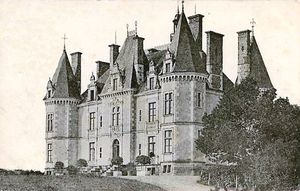
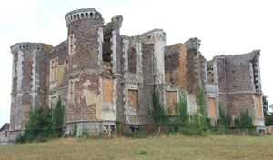
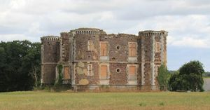
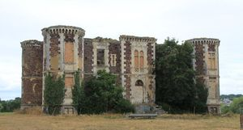
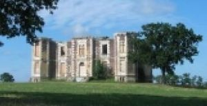
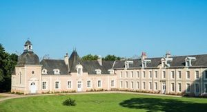
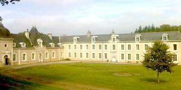
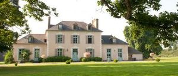

Recensement Jean-Claude Truffet








| Département | 35 — Ille-et-Vilaine |
| Canton | Montfort-sur-Meu |
| Commune | Iffendic |
| Type d'édifice | Château |
| Période d'origine | XIV-XV-XIX |
| Coordonnées GPS | 48° 07' 52" Nord, 2° 01' 57" Ouest Breuil GPS : 48° 07' 29" Nord, 2° 01' 16" Ouest Morinais GPS : 48° 07' 52" Nord, 2° 01' 57" Ouest Pin GPS : 48° 07' 52" Nord, 2° 01' 57" Ouest |
Cinq châteaux à Iffendic; Breil, la Chasse,la Morinais, du Pin, Bas -Canlou et Treguil. BREIL, fut la proie des flammes dans la nuit du 27 au 28 juin 1903, a été édifié vers 1860-1863 pour Armand Huchet de Cintré. Le style néo-Renaissance employé n'est pas sans rappeler la production de Jacques Mellet qui a déjà construit plusieurs châteaux de ce type, notamment celui de la Haute Forêt à Bréal-Sous-Montfort. Le premier seigneur connu du Breil semble être Jean du Breil, écuyer de la compagnie du sire de Montfort, son suzerain en 1351, tandis qu'un de ses parents servait dans la compagnie du Sire de Derval. En 1427, le Breil appartenait à famille deThomas de Breil qui possédait également la terre noble de la Ville-Homet Il a appartenu, tour à tour, propriété des familles du Breil (1480), de la Dobiaye, Frotet, du Pont dEschevilly, Huchet de Cintré La CHASSE C'est en 1340 au seigneur Raoul de la Châsse, demeure fortifiée destinée à se protéger des pillards et dépendant des comtes de Montfort. Au XVIe siècle, le fief s'agrandit au gré des mariages. EN 1550, Jean II n'ayant pas de fils, son héritière, Bertranne de la Châsse, fit passer la seigneurie à la famille d'Andigné en se mariant à Lancelot d'Andigné. La propriété était divisée en deux parties : la première, implantée sur le vallon, avait la forme d'un quadrilatère entouré d'un mur de schiste et contenait des serres, un grand potager et un verger. La deuxième partie, située en contrebas, était réservée aux châtelains et contenait le parc. La maison des d'Andigné demeura propriétaire de la Châsse jusqu'à l'aube du XXe siècle. L'édifice est reconstruit à la fin du XIXe siècle, dans le style néo-XVIIe siècle, pour la famille de Nicolaï, alliée au d'Andigné. Les bâtiments en place sont en mauvais état de conservation.
La MORINAIS, est mentionné dès 1420, il appartient à cette date à Eustache de la Morinaye. Propriété des de la Monneraye, hommes de magistrature, à partir du XVIIe siècle, il avait un droit de haute justice. Rebâti en 1749, on éleva une chapelle qui existe toujours et qui fut desservie par les prêtres de la paroisse jusqu'en 1960 environ avec des périodes d'interruptions. Il fut saccagé et brûlé en partie en janvier 1790 par une bande de paysans armé, il fut restauré au début du XIXe siècle. En 1849, Anna de la Monneraye épousa l'amiral Camille Fleuriot de Langle, famille à laquelle il appartient depuis cette date. La façade sur jardin est composée de huit travées. L'irrégularité de celle-ci témoigne de campagnes successives de travaux. Le corps central, cantonné à l'arrière d'une tour carrée, semble le plus ancien et vraisemblablement antérieur au XVIIIe siècle. Du PIN Cette belle demeure construite dans la première moitié du XIXe siècle a été élevé sur un ancien site de manoir. Ce dernier était mentionné en 1420 et 1513 et appartenait au seigneur de ce nom. La chapelle dédiée à Notre Dame de la Salette est une construction néogothique. Elle a été construite pour la famille de la Monneraye, propriétaire du Pin à la fin du XIXe siècle. Communs en place également à signaler. Le château est composé d'un pavillon central entouré de deux ailes plus basses. Selon les propriétaires l'enduit cache une construction en moellons de schiste. Communs en terre. Logement au dessus des écuries avec partie haute en pan de bois chambres d'hôtes. BAS-CANLOU, manoir aurait été construit vers 1500. L'ensemble du manoir est formé de blocs de schiste minuscules, empilés sans joints. Quelques lignes de blocs de quartz régulières rompent la couleur pourpre de la pierre. La corniche à modillons est taillée dans le granit. Chaque bloc à deux ressauts est finement ciselé. La lucarne de type Renaissance avec ses deux pilastres ressemble à celle de l'ex-Manoir de Bouquidy, qui est très proche.
Breil; Familles du Breil la Chasse ; Famille de Nicolaï Morinais; Amiral Camille Fleuriot de Langle Pin ; Famille de la Monneraye,
"
Cinq châteaux à Iffendic; Breil grav de 1 à 4, la Chasse grav -5-6-7-8,la Morinais, du Pin grav-8, Bas -Canlou et Treguil. Bas Canlou; GPS : 48° 07' 52" Nord, 2° 01' 57" Ouest Breuil GPS : 48° 07' 29" Nord, 2° 01' 16" Ouest Morinais GPS : 48° 07' 52" Nord, 2° 01' 57" Ouest Pin GPS : 48° 07' 52" Nord, 2° 01' 57" Ouest